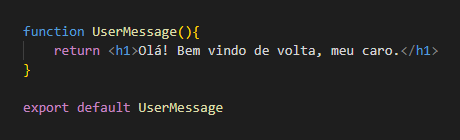
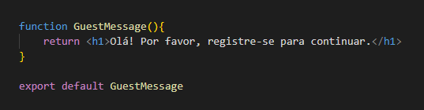
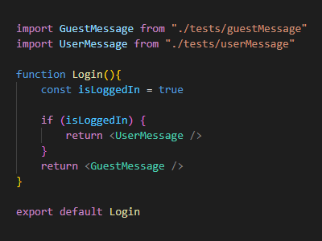
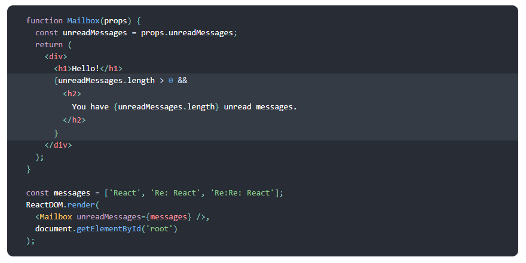
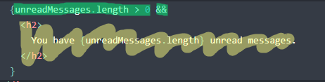
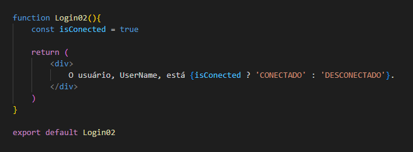

Renderização Condicional
Renderização Condicional: É quando um componente, ou parte dele, deve, ou não, ser renderizado.
Renderização Condicional Simples:
- Criando os componentes de mensagem:
USUÁRIO

VISITANTE

- Criando o componente de lógica:

- Importando os dois componentes de mensagem.
- Declarando o componente com um bom nome.
- Declarando a variável de teste.
- Criando a lógica:
"Se a variável 'isLoggedIn' for verdadeira, renderize o componente 'UserMessage'. Se não, renderize 'GuestMessage'."
OBS: Note que, por ser uma verificação apenas com duas opções, o "else" se torna opcional.
Renderização Condicional Inline com o Operador Lógico &&:
- Exemplo:

- Declarando o componente com um bom nome.
- UnreadMessages provavelmente é um Array de mensagens não lidas e estamos atribuindo esse array dentro de uma variável com o mesmo nome "UnreadMessages".
- Renderizando o jsx comum (uma div em volta e um h1).
- Entre chaves, podemos usar código js tranquilamente dentro do React.
- Então vamos lá, por que isso funciona assim? No JS, quando passamos True && Expressão, o JS vai mostrar sempre a própria expressão.
Ex:

"unreadMessages.length > 0" >>> Primeiro teste é igual a True
Em seguida, temos && vazio, daí o JS cai na Expressão "h2 lorem lorem lorem..." e renderiza a própria Expressão, no caso, o h2 lorem.
Se o Primeiro teste for igual a False e logo depois um && vazio, daí o JS retorna nada e finaliza o teste lógico.
Renderização Condicional Inline com Operador Ternário
OBS: APENAS PARA TESTES DE LÓGICA SIMPLES (tem difícil leitura).
- Exemplo:

- Declarando o componente com um bom nome.
- Declarando a variável de teste.
- Renderizando o jsx comum (uma div com uma mensagem).
- Criando a Lógica:
{isConected ? 'conectado' : 'desconectado'} >>> Se isConected for True, mostra a string depois da enterrogação: 'conectado'.
{isConected ? 'conectado' : 'desconectado'} >>> Se isConected for False, mostra a string depois dos dois pontos: 'desconectado'.